Manuale degli strumenti per ITI-TV
Tutorial Github e Git
Benvenuto nel tutorial su Github e Git
Questo tutorial è stato creato per aiutare chiunque voglia imparare ad usare Github e Git per il progetto ITI-TV. Qui troverai tutte le informazioni necessarie per iniziare a usare queste due piattaforme.
Se non sai da dove iniziare, ti consiglio di dare un'occhiata alla sezione Cos'è Github e Cos'è Git.
Se invece sei già un utente esperto, puoi saltare direttamente alla sezione Comandi per vedere come usare SourceTree.
Cos'è Github
Github è una piattaforma di hosting per progetti software. È basata su Git, un sistema di controllo versione distribuito. Github è stato creato nel 2008 da Chris Wanstrath, PJ Hyett e Tom Preston-Werner.
Con Github è possibile creare repository, collaborare con altri utenti, gestire progetti e molto altro.
Cos'è Git
Git è un sistema di controllo versione distribuito. È stato creato da Linus Torvalds nel 2005 per gestire il kernel di Linux. Git è stato progettato per essere veloce e scalabile, supportando progetti di qualsiasi dimensione.
Con Git è possibile tenere traccia delle modifiche apportate ai file, creare branch, fare merge e molto altro.
Installazioni
Per iniziare ad usare Github e Git, è necessario installare i relativi software. Qui troverai le istruzioni per installare Git e SourceTree.
Git
Per installare Git, segui le istruzioni presenti sul sito ufficiale: https://git-scm.com/
-
è caldamente consigliato, durante l'installazione, impostare questa cosa per non evere problemi con i profili di git
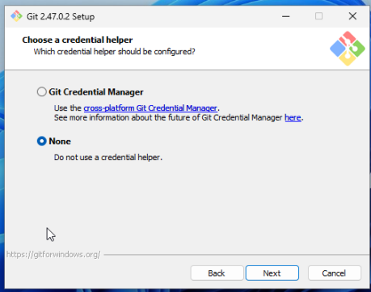
Installa anche github desktop per avere un'interfaccia grafica per gestire i repository: https://desktop.github.com/
Dopo aver installato i due vi faccio vedere come fare una prima configurazione (Ci servirà github desktop solo per effettuare l'accesso)
- Effetua l'accesso a github
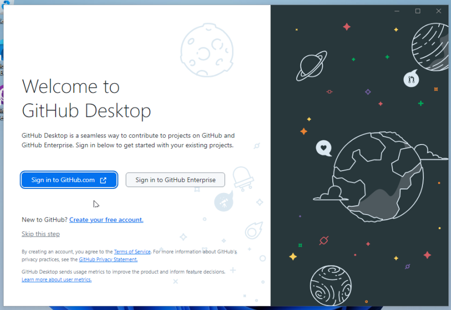 - Effetua l'accesso o registrati se non hai un accout
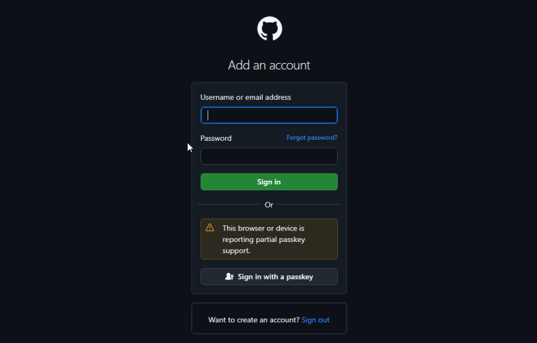 - Lascia la configurazione invariata rispetto a cosa vuole fare github desktop
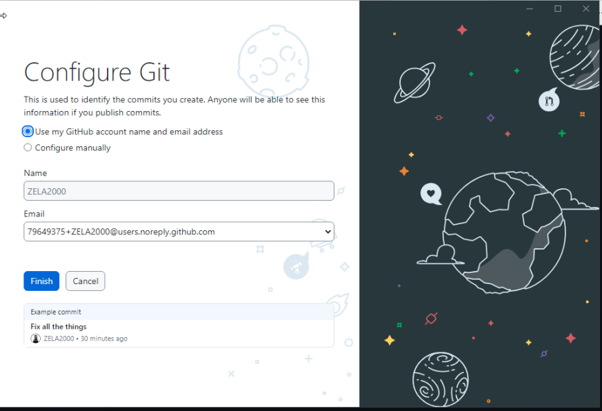 - Hai finito con github desktop
SourceTree
Per installare SourceTree, segui le istruzioni presenti sul sito ufficiale: https://www.sourcetreeapp.com/
Per installare SourceTree per quello che ci serve, ti faro vedere per ogni schermata come ho configurato personalmente SouceTree
- Salta questa pagina
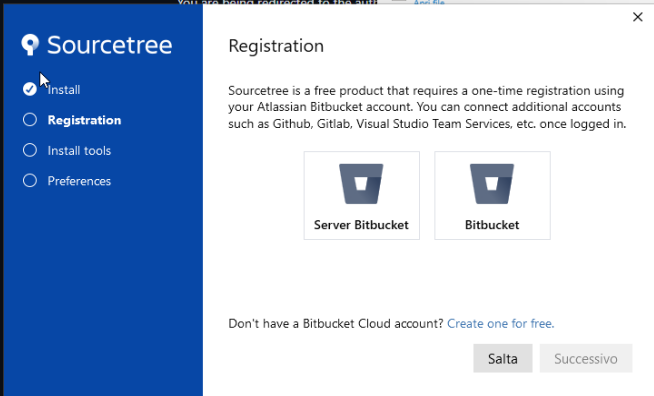 - Togli la spunta su Mercurian, quindi continua
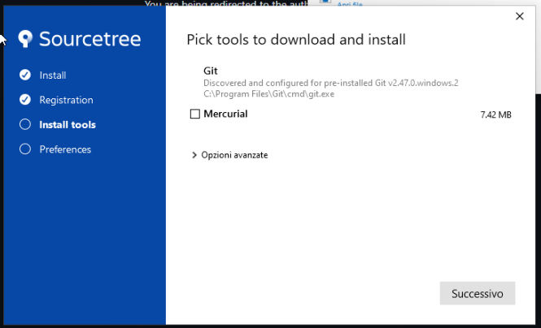 - Qua non toccare nulla!!!
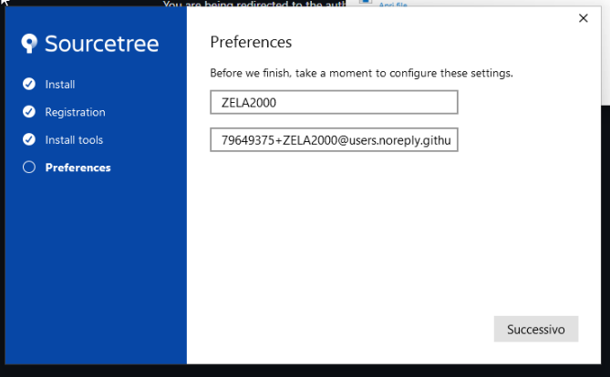 - Qua puoi tranquillamente dire di no
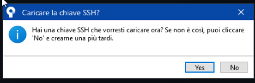 - Hai finito con la configurazione di SourceTree
Uso di SourceTree
SourceTree è un client Git gratuito e facile da usare. Con SourceTree è possibile gestire i repository, fare commit, push, pull e molto altro.
Tutorial Figma
Cos'è Figma
Figma è un'applicazione di design basata su browser. È possibile creare interfacce utente, prototipi e molto altro. Figma è stato creato nel 2012 da Dylan Field e Evan Wallace.
Con Figma è possibile collaborare con altri utenti, condividere progetti e molto altro.
Configurazione Account
Per iniziare ad usare Figma, è necessario creare un account; Consiglio l'accesso con il vostro accout Google istutuzionale.Inserite nome utene, vi chiederà il topic selezionate "Software Development" e poi cliccate su "Create Account"
Una volta creato il vostro account dovete attivare le funzionalità PRO tramite accout Educational al seguente link figma-for-education vi ritroverete in questa pagina,cliccate su "Get Verified"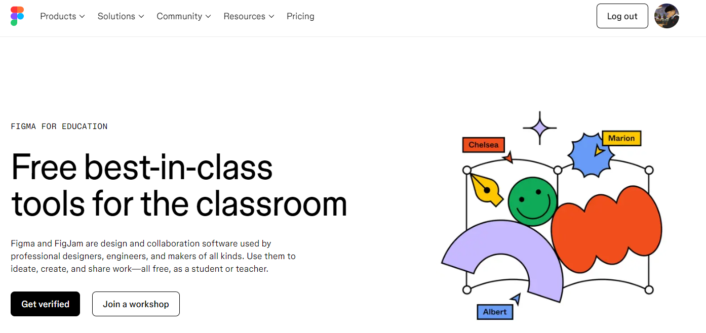
Vi ritroveret un form da compilare come nelle seguenti immagini
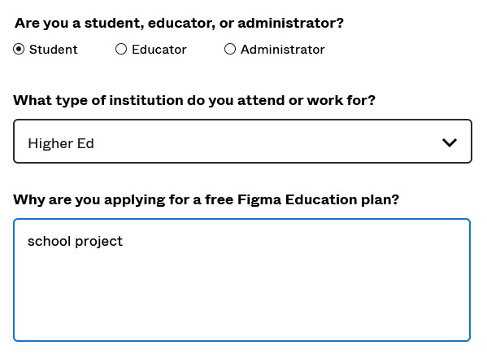
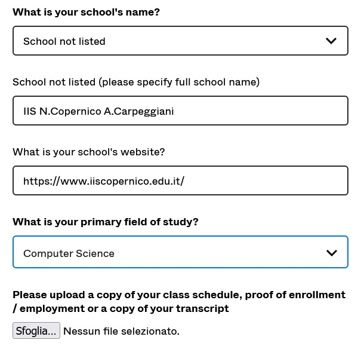
inserite la foto del vostro orario scolastico
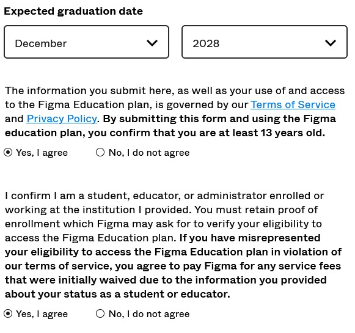
una volta fatto tutto cliccate su "Submit" e attendete la verifica da parte di Figma;
ora potete accettare l'ivito al gruppo che trovate sulla mail o nelle notifiche nella home di Figma.
Plug-in e Tool consigliati
Per migliorare l'esperienza di utilizzo di Figma, ti consiglio di installare i seguenti plug-in:
Tutorial XAMPP
Cos'è XAMPP
XAMPP è un pacchetto software gratuito e open source che contiene Apache, MySQL, PHP e Perl. È possibile utilizzare XAMPP per sviluppare e testare siti web in locale.
XAMPP è disponibile per Windows, macOS e Linux.
Installazione
Per poter scaricare il software XAMPP:
Recarsi su download XAMPP: in alternativa al
link qui riportato è
sufficiente cercare su Google “XAMPP” e il primo risultato porterà alla pagina corretta
All’interno della schermata home troverete questa schermata
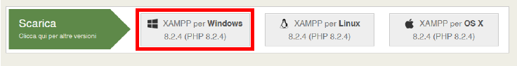
Andate a selezionare quello che abbiamo evidenziato in rosso, in automatico partirà il download del
file eseguibile per l’installazione.Una volta terminato il download del file, eseguirlo facendo doppio
click con il mouse su di esso
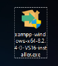
Verrà richiesto di autorizzare l’applicazione, baserà selezionare “SI”
Qualora non foste amministratore di macchina non riuscirete a installare il programma
Se siete in possesso di un antivirus verrà mostrato questo avviso, cliccate “SI” e provate a procedere
con l’installazione
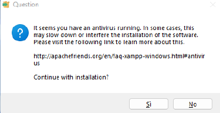
Vi verrà generato un errore simile a questo, cliccando “OK” dovrebbe partire poi la normale
installazione del software
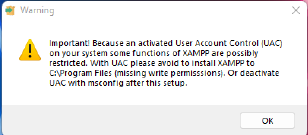
cliccate su “Next” per procedere con l’installazione
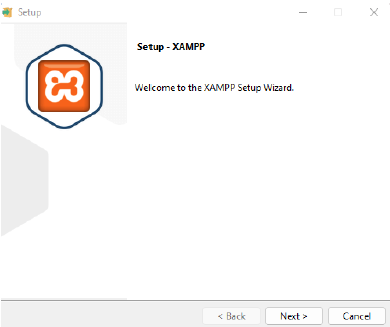
Selezionate le componenti che volete installare, come da foto
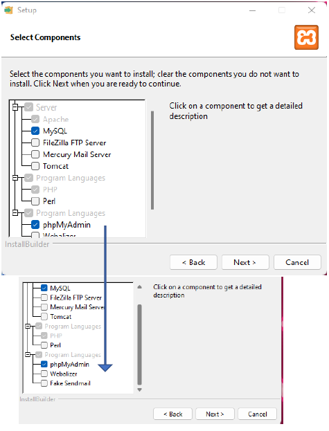
Mantenere la cartella di default e cliccare su “Next”
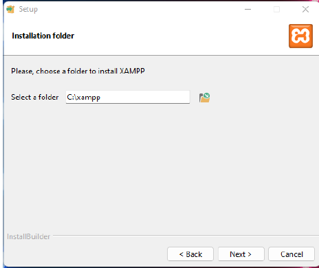
Lasciare la lingua impostata su Inglese e cliccare su “Next”
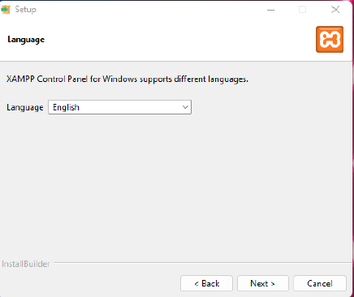
Selezionare “Next” per procedere con l’installazione
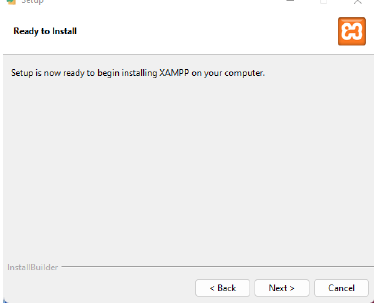
Attendere l’effettiva installazione
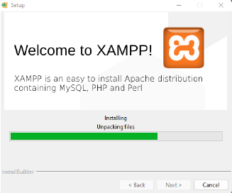
Cliccare su “Finish” per terminare l’installazione
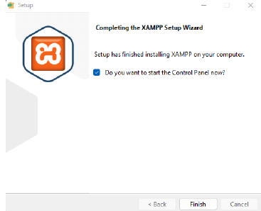
Selezionare “Finish” per avviare il pannello di controllo di XAMPP
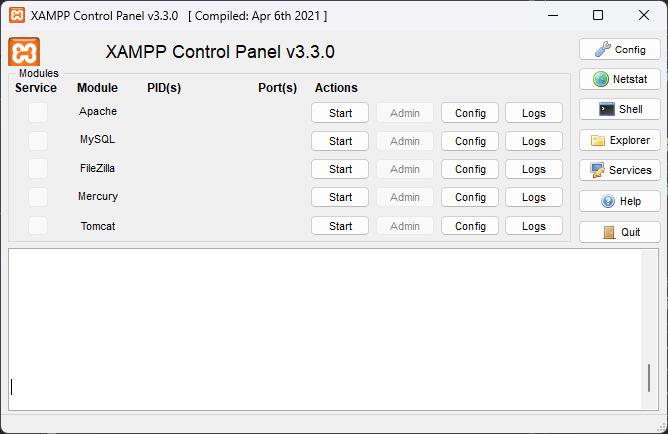
Che cos'è phpMyAdmin?
phpMyAdmin è uno strumento open-source scritto in PHP che consente di gestire i database MySQL tramite un'interfaccia web intuitiva. Viene utilizzato principalmente per amministrare i database, semplificando la gestione e l'organizzazione delle informazioni contenute in un database MySQL.
A cosa serve phpMyAdmin?
phpMyAdmin permette di svolgere varie operazioni sui database, tra cui:
- Creare, modificare o eliminare database e tabelle.
- Gestire utenti e privilegi di accesso ai database.
- Inserire, aggiornare o eliminare record all'interno delle tabelle.
- Importare ed esportare database in vari formati, come SQL e CSV.
- Eseguire query SQL per cercare o modificare informazioni.
Come accedere a phpMyAdmin
Per accedere a phpMyAdmin, inserisci il nome utente e la password forniti per l'accesso al database MySQL. Dopo l'autenticazione, avrai accesso alla dashboard principale di phpMyAdmin, dove puoi gestire i tuoi database.
Funzioni principali di phpMyAdmin
Una volta effettuato l'accesso, le funzioni principali di phpMyAdmin includono:
- Home: Da qui è possibile visualizzare l'elenco dei database e accedere alle configurazioni principali.
- Struttura: Permette di visualizzare e modificare la struttura delle tabelle e dei campi.
- SQL: Qui è possibile eseguire query SQL manualmente.
- Importa/Esporta: Funzioni per importare o esportare database in formati compatibili.
- Ricerca: Strumento per cercare informazioni specifiche nel database.
Vantaggi di phpMyAdmin
phpMyAdmin semplifica notevolmente la gestione di database MySQL, eliminando la necessità di utilizzare la riga di comando per eseguire operazioni complesse. Grazie alla sua interfaccia grafica, anche gli utenti meno esperti possono navigare e gestire facilmente i loro dati.
Operazioni Essenziali con phpMyAdmin
1. Creare un Nuovo Database
Per creare un nuovo database:
- Dalla home di phpMyAdmin, clicca su Database nel menu in alto.
- Inserisci un nome per il nuovo database nella casella di testo.
- Scegli un collazione (di solito
utf8_general_civa bene per molti usi). - Clicca su Crea per finalizzare.
2. Creare una Nuova Tabella
Per creare una tabella in un database esistente:
- Accedi al database cliccando sul suo nome nella barra laterale sinistra.
- Inserisci il nome della tabella e il numero di colonne richieste.
- Clicca su Vai, quindi inserisci i dettagli per ciascuna colonna, come il nome,
il tipo di dato (ad esempio,
INT,VARCHAR, ecc.), e altre opzioni. - Clicca su Salva per creare la tabella.
3. Aggiungere, Modificare o Eliminare Record
Per aggiungere, modificare o eliminare dati in una tabella:
- Seleziona il database e clicca sulla tabella desiderata.
- Aggiungere un record: Vai alla scheda Inserisci, compila i campi con i dati da aggiungere e clicca su Esegui.
- Modificare un record: Vai alla scheda Browse (Sfoglia), trova il record da modificare e clicca su Edit accanto ad esso. Modifica i campi necessari e clicca su Esegui.
- Eliminare un record: Nella scheda Browse, clicca su Delete accanto al record da eliminare e conferma.
4. Eseguire una Query SQL
phpMyAdmin permette di eseguire query SQL manuali. Per farlo:
- Seleziona il database in cui vuoi eseguire la query.
- Vai alla scheda SQL nella parte superiore della pagina.
- Scrivi la query SQL desiderata (ad esempio,
SELECT * FROM nome_tabella;per visualizzare tutti i record di una tabella). - Clicca su Vai per eseguire la query e visualizzare i risultati.
5. Importare ed Esportare Database
phpMyAdmin rende facile importare ed esportare database per backup o trasferimento.
- Esportare un database: Seleziona il database, vai alla scheda Esporta, scegli il formato (di solito SQL), e clicca su Vai per scaricare il file.
- Importare un database: Vai alla scheda Importa nel database di destinazione, scegli il file da importare, e clicca su Vai per avviare l’importazione.